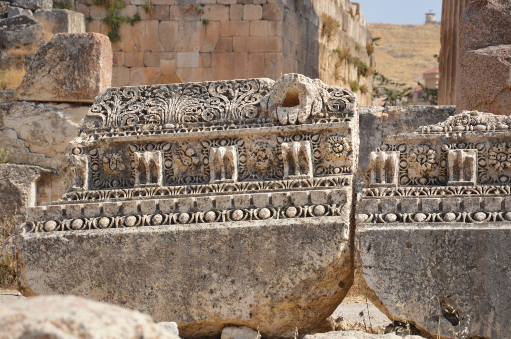
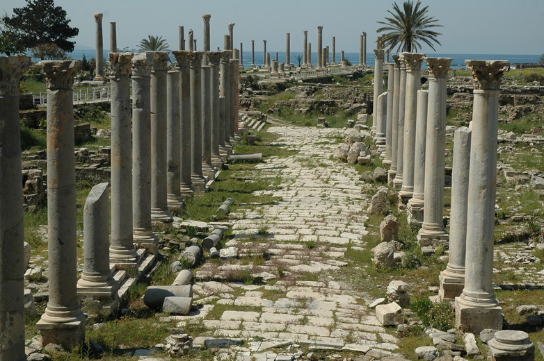
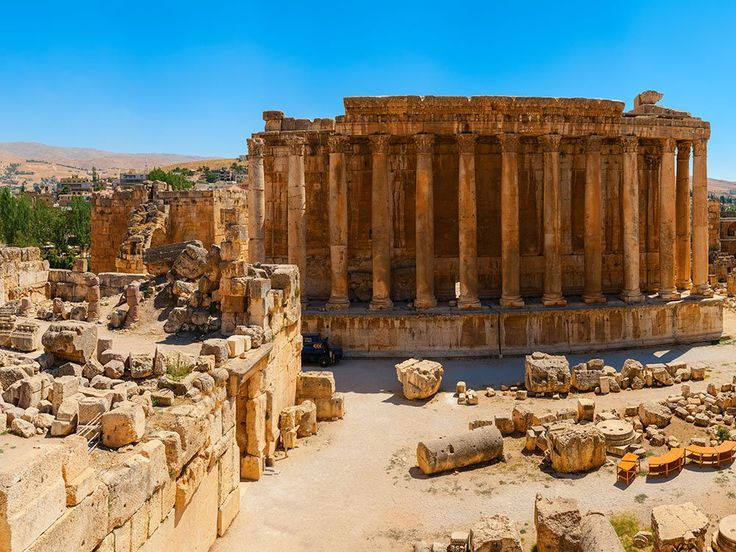
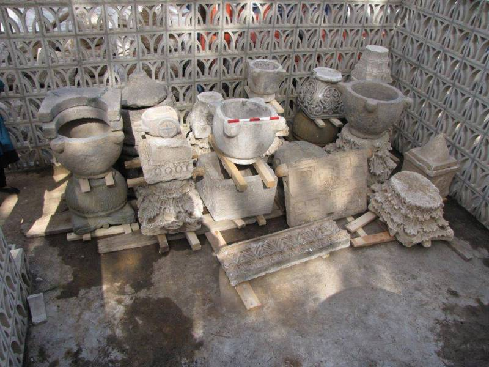

Le Liban est, vers le XVème siècle avant Jésus-Christ, occupé par les Phéniciens. Installés le long de la côte, ces marchands et marins, inventeurs de l'alphabet, fondent des villes. Vers le VIIème siècle avant J.-C., les Assyriens envahissent la Phénicie, qu'ils doivent quitter sous la pression militaire des troupes égyptiennes des Pharaons. Au IVème siècle avant J-C, le Liban est occupé par les armées d'Alexandre le Grand. S'ouvre alors la période hellénistique pendant laquelle la Phénicie est gouvernée par les Séleucides, dynastie de militaires qui s’empare du pouvoir à mort d’Alexandre. Puis, à l’époque romaine, Pompée s’empare en 64 avant notre ère de la province syrienne (composée à l’époque antique du Liban, de la Syrie, de la Palestine et de la Jordanie) qui devient une province de l’Empire romain pendant quatre siècles. De 395 – à la suite du partage de l’Empire romain en deux Empires (l’Empire d’Occident et l’Empire d’Orient, Byzance) – à 634, le Liban est sous domination byzantine. A la suite de la conquête arabe et de la prise de Damas en 635, le Liban est gouverné par les dynasties omeyyade (660 à 750), abbasside (749-1258) et fâtimide (909-1171).
Tyr, où, selon la légende, fut découverte la pourpre, fut la grande cité phénicienne maîtresse des mers, fondatrice de comptoirs prospères comme Cadix et Carthage. Son rôle historique déclina à la fin des croisades. Elle conserve d'importants vestiges archéologiques, principalement de l'époque romaine.
  Byblos était l'une des trois villes d'origine des Phéniciens qui ont colonisé la Méditerrannée. Elle est considéré comme la ville la plus vielle au monde, ici des artéfacts phéniciens découvert dans la ville de byblos.
